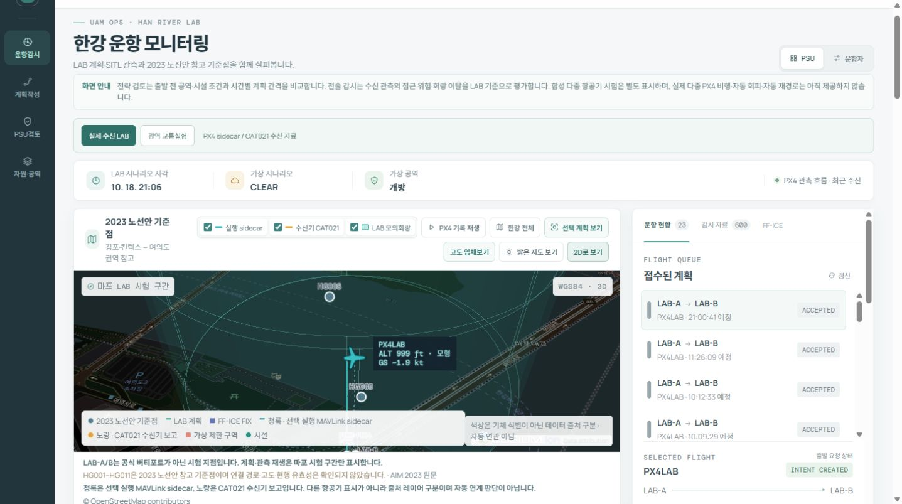

PSU / 운항 지원
어떤 비행을
어떤 조건에서 수용할까.
운항자가 제출한 계획을 확인하고, PSU 역할의 모의 결정과 운영 조건 검토를 남깁니다. 계획 간 시간·경로 충돌과 제한 공역, 패드 가용성을 함께 다룹니다.
비행계획모의 수락·반려교통·자원 검토
UAM PSU · 운항통제 시스템
계획 접수와 PSU 모의 검토, 패드 예약부터
모의기체의 비행과 관측 감시까지.
한 편의 UAM 운항을 연결하는 시스템입니다.
한강을 배경으로 개발한 개인 LAB
Java · ROS 2 · PX4 · Gazebo · Cesium

2026.10.18 실제 화면 캡처 · 실시간 운영 화면이 아닙니다.
계획이 수락됐다는 사실만으로 기체를 출발시킬 수는 없습니다. 공역·기상·패드의 현재 조건을 확인하고, 실제 기체가 계획대로 움직이는지 계속 살펴야 합니다. 이 시스템은 그 판단에 필요한 업무와 데이터를 연결합니다.
PSU / 운항 지원
운항자가 제출한 계획을 확인하고, PSU 역할의 모의 결정과 운영 조건 검토를 남깁니다. 계획 간 시간·경로 충돌과 제한 공역, 패드 가용성을 함께 다룹니다.
FLIGHT OPERATIONS / 운항통제
시설 사용 허가와 실행 위임, 출발 시각을 확인한 뒤 PX4 모의기체에 연결합니다. 수신한 위치와 고도를 지도에 표시하고, 자료 품질과 운항 상태를 확인합니다.
PSU는 이 LAB에서 계획 검토와 운항 지원을 맡도록 구성한 역할입니다. 실제 기관의 운항 허가·안전 인증이나 상용 PSU 서비스와는 구분합니다.
역할 구분의 참고 자료 [1] FAA UAM ConOps §4.3 · [4] 비행자료·감시자료 처리
직접 구현한 업무 화면입니다.
화면을 선택하고 이미지를 누르면
세부 내용을 크게 볼 수 있습니다.
계획·시설·수신 관측을 한강 지도에서 함께 보고, 선택한 비행의 위치와 상태를 확인합니다.
실제 PX4 관측을 다루는 LAB 화면 · 2026.10.18 캡처
화면은 실제 캡처 / 아래 경로는 운항 흐름 설명용 도식
기체와 출·도착 시설을 고르고, 각 FIX의 위도·경도·고도·시각을 입력합니다. 초안에 GUFI를 발급하고 FF-ICE/FIXM XML을 검사해 접수합니다.
PSU 화면에서 수락·반려와 사유를 기록합니다. 공역·기상·계획 간 충돌 검토는 별도로 수행하며, 검토한 조건의 버전도 남깁니다.
패드를 독립 자원으로 보고 시간창을 예약합니다. 예약·물리 점유·시설 허가를 구분하고, 도착 자원이 부족하면 출발지에만 새 예약이 남지 않도록 처리합니다.
명시적 실행 요청으로 PX4·Gazebo를 준비하고 출발 시각과 조건을 재확인합니다. Python 어댑터가 시간별 목표를 보내고 기체의 관측 위치를 받습니다.
관측을 ROS 2·CAT021 경로로 수신·저장하고 지도에 표시합니다. 정상 종료 때 착륙·시동 해제·실행 정리를 확인해 예약을 반환하고, 판단과 관측 이력은 보존합니다.
기존 프로젝트의 실제 화면과
관측 기록을 바탕으로 제작한 시연입니다.
재생 유형은 각 영상에 표시했습니다.
SYSTEM SHOWCASE
재질 검수용 Gazebo 정지 렌더, 단일 PX4의 저장 관측 압축 재생, 광역 운동학 합성 교통실험이 이어집니다. 실시간 Gazebo 연속 녹화나 실제 여러 기체의 동시 비행은 아닙니다.
영상 원본 ↓목표는 단일 PC에서 한 편의 모의 운항을 끝까지 연결하고, 판단과 데이터의 근거를 확인하는 것이었습니다. 그 목표에서 무엇을 나눌지, 어떤 도구를 쓸지 정했습니다.
계획을 수락한 뒤 패드가 닫히거나 기상이 바뀌면, 이전 결정을 그대로 출발 허가로 사용할 수 없습니다.
도착 패드 폐쇄 시 예약을 거절하고 출발지에만 예약이 남지 않는지 확인했습니다. 합성 WIND를 해제해도 철회한 위임은 자동으로 복원되지 않았습니다.
역할·자원 개념 [1] ↗설계 판단·시험 기록 ↗계획상 지나야 할 좌표가 화면에 움직인다는 사실만으로 기체가 그곳을 비행했다고 판단할 수는 없습니다.
30분 실행의 8,279개 표본을 원 관측·ROS·CAT021 원문·DB 값으로 대조했습니다. 선택 표본의 원천·변환·수신·저장을 화면에서 나란히 볼 수 있습니다.
표본 추적 화면 ↑처리 역할의 사후 대조 [4] ↗비행계획의 의미와 감시자료의 항목을 확인하려면 프로젝트 내부 필드만으로 설명하는 방식보다 대조할 기준이 필요했습니다.
제출 XML 원문과 CAT021 바이트를 보존해 파싱 결과와 대조합니다. 모형 기준면의 높이를 WGS-84 타원체 높이로 바꿔 설명하지 않았습니다.
계획 구조·스키마 [2] ↗감시 항목·좌표 정의 [3] ↗기체는 계속 움직이는데 Java 서버가 내려가자 위치 표본 198개가 DB에 저장되지 않았습니다. 송신 완료와 저장 완료는 달랐습니다.
누락된 198개를 복구하고 재전송 뒤 저장 건수가 늘지 않는지 확인했습니다. 이는 해당 시험의 복구 근거이며 exactly-once 전달 보장으로 일반화하지 않습니다.
ACK·재전송·중복 비교 근거 ↗복구 시험 기록 ↓TOOLS FOLLOW THE REQUIREMENTS
계획·검토·예약·버전·이력을 한 업무 서비스에서 처리하고, 여러 상태 변경을 트랜잭션 경계 안에서 관리하기 위해 사용했습니다.
기체 제어 주기와 업무 처리는 분리하고 Python 어댑터와 명시적 실행 계약으로 연결했습니다.
단일 PC에서 별도 DB 서버 없이 반복 실행하고, 재시작 뒤 데이터와 스키마 변경 이력을 함께 확인하는 구성에 맞췄습니다.
이 구성에서의 저장·재시작을 검증했습니다. 다른 DB보다 빠르다는 비교 결과를 선택 근거로 삼지 않았습니다.
모의기체 실행·관측 수집을 맡고, 발행과 별도 구독·변환 사이의 경계를 기록하기 위해 나눴습니다.
기체 명령은 MAVLink 경로입니다. ROS 2는 관측 전달 경계에 쓰며 PX4 DDS 명령 경로로 설명하지 않습니다.
예정 좌표의 단순 재생을 넘어 모의기체가 만든 추정 위치와 동작을 받아 계획·관측·종료 상태를 대조하기 위해 선택했습니다.
모의 센서·월드 기준의 시험입니다. 영상에는 실제 모의비행 기록과 합성 교통을 구분해 표시합니다.
계획·검토 양식과 지리 좌표·고도 표출을 연결하고, 지도에서는 최소 정보를 보다가 선택한 비행의 세부 근거로 들어가게 구성했습니다.
계획선과 관측 항적, 자료 출처를 따로 표시하고 모형 고도의 기준을 함께 설명합니다.
사용하던 PC와 Linux 기반 ROS 2·Gazebo·PX4 실행 환경을 함께 쓰기 위한 선택입니다.
Java도 WSL2에서 실행하는 로컬 LAB입니다. 네트워크·시계·프로세스 종료 경계는 별도 검수 대상으로 다뤘습니다.
선택 이유는 기존 블로그의 ‘세 가지 문제와 설계 판단’, ‘도구와 실행 환경을 고른 이유’ 및 실제 구현 문서와 대조했습니다. 위 비교는 이 LAB의 목표·제약에 따른 판단이며 언어·DB·브로커 간 성능 우열을 측정한 결과가 아닙니다. 선택 이유를 정리한 공개 기록 ↗
업무 처리와 기체 연계를 나누고,
같은 비행·실행·관측을 따라
요청과 결과가 이어지도록 구성했습니다.
React · TypeScript
Cesium 2D / 3D
Java · Spring Boot
계획·자원·실행 · H2
Python · ROS 2
SQLite outbox · CAT021
PX4 SITL · Gazebo
MAVLink 목표·관측
웹의 요청을 Java에서 검토하고, 실행 계약과 시각 게이트를 거쳐 Python 어댑터가 PX4에 목표를 보냅니다.
FF-ICE / FIXM시간이 있는 비행계획의 제한 프로필
GUFI · 실행 ID · 표본 번호비행·실행·관측을 구분하는 식별자
CAT021 부분집합 + 별도 봉투위치 원문과 실행 메타데이터를 분리
FROM A DOT TO ITS ORIGIN
위치가 보인다는 것과 그 위치를 믿을 수 있다는 것은 다릅니다. 선택한 표본의 출처·시각·변환·수신 원문·DB 값을 나란히 확인할 수 있게 만들었습니다.
GUFI·보조 고도는 CAT021 밖의 메타데이터입니다.
아래는 서로 다른 기존 실행의 결과입니다.
표본 수는 항공기 수나 시험 횟수가 아닙니다.
위치 표본의 관측·ROS·DB 원문 대조
누락 표본 복구·동일 표본 중복 저장 방지
단일 PX4 순차 시험·독립 ULog 대조
전체 표본 전달·착륙·시동 해제·예약 반환
각 수치의 검증 방법과 기록은 프로젝트 시험 근거 ↓에서 확인할 수 있습니다.
제한 FF-ICE 계획 접수, PSU 모의 결정, 운영 조건 검토, 패드 예약·허가, 단일 PX4 연계, 관측 저장·표출·추적, 회랑 감시와 전략·전술 자문, 복구·재전송.
화면 캡처와 영상은 기존 프로젝트 자료입니다. 비정상 시연은 저고도 단일 PX4 실행 기록의 압축 재생입니다. 복행·대체 이동은 시험용 Offboard 동작이며 Java 자문 API와 자동 연결된 명령 기능이 아닙니다.
1,000ft는 모형 기준면 가정의 정상 시나리오 목표입니다. 10월 19일 저고도·20배 일정 압축 재검수는 640개 전체 전달과 관측→ACK p95 0.850초·p99 3.189초를 확인했으나 p99 목표를 넘어서 지연 판정은 REVIEW입니다. 서로 다른 시험·계측 경계의 직접 비교는 하지 않습니다.
FROM REFERENCES TO IMPLEMENTATION
공개 문헌에서 역할과 데이터 구조를 참고하고, 실제 동작은 개인 LAB의 화면·관측·시험 기록으로 확인했습니다. 각 자료가 설명하는 범위와 이 프로젝트에 적용한 내용을 함께 적었습니다.
FAA UAM ConOps v2.0 §4.3.2·§4.3.4·§4.3.7은 운항자·PSU·버티포트의 역할과 운항 의도·자원 가용성의 관계를 설명합니다.
프로젝트 연결계획 검토, 패드 가용성, 운항자 실행 요청을 서로 다른 업무로 구성했습니다.
FAA UAM ConOps v2.0 · §4.3 ↗FIXM Core 4.3.0과 FF-ICE Message 1.1.0의 스키마·공식 설명서를 계획 교환 구조의 기준으로 사용했습니다.
프로젝트 연결제한 FFP 프로필의 XML/XSD 검사, GUFI 식별, 시간별 FIX 입력과 제출 원문 보존에 적용했습니다.
FIXM 공식 사용자 설명서 ↗Core 4.3 / Message 1.1 스키마 ZIP ↗EUROCONTROL ASTERIX CAT021 ed2.7의 데이터 항목과 부호화 정의를 참고했습니다. WGS-84 위치 항목은 §5.2.18·§5.2.19에서 확인할 수 있습니다.
프로젝트 연결선택한 CAT021 부분집합의 송수신 원문과 DB 값을 대조했습니다. GUFI·실행 ID·보조 고도는 별도 봉투의 메타데이터입니다.
CAT021 ed2.7 · 위치 항목 ↗EUROCONTROL FDPS Guidance v1.0(2024)와 ARTAS 공식 기능 설명을 구현 뒤 대조한 참고 자료입니다.
프로젝트 연결비행계획 처리와 기체 관측 처리를 나누고, 같은 비행으로 연결해 계획과 실제 움직임을 비교했습니다.
FDPS Guidance v1.0 ↗ARTAS 공개 기능 설명 ↗실행 환경과 같은 PX4 v1.17의 Gazebo Simulation 문서를 기준으로 모의비행과 기체 연계를 구성했습니다.
프로젝트 연결Python의 목표 위치 전달, PX4 관측 수집, 착륙·시동 해제 확인을 실제 모의기체 기록과 대조했습니다.
PX4 v1.17 · Gazebo Simulation ↗NASA High Density Vertiplex 비행시험 논문의 시나리오와 FAA UAM ConOps §6.1의 자원 확인 흐름을 참고했습니다.
프로젝트 연결연결 상실·감시 전달 중단·복행·대체 착륙을 조건별로 나누고, 기체 반응과 관측 전달을 따로 확인했습니다.
NASA HDV · AIAA SciTech 2024 ↗FAA UAM ConOps · §6.1 ↗문헌은 설계·대조의 참고 자료이며, 아래 수치는 이 프로젝트의 자체 시험 결과입니다. 한국 UAM 공통 의무 규격이나 ARTAS 코드·알고리즘을 적용했다는 의미로 사용하지 않았습니다.
PROJECT TEST RECORDS
공개 기록에는 개발 의도·시험 결과·참고 문헌과 각 영상의 재생 유형이 정리돼 있습니다. 화면과 시험은 2026년 10월의 개인 LAB 기록이며 실제 운항 허가·안전 인증을 의미하지 않습니다.